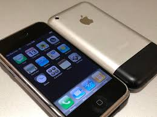
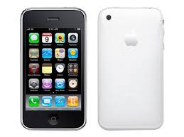

let's take a trip down memory lane of one of the most influential tech products of all time: The iPhone. Hopefulluy you enjoy it and find something new.
OG: This is where the story begins. Allegedly, The iPhone was so hyped up that 6 out of 10 Americans knew that it was coming before that legendary day. The iPhone brought multi touch to the main stream in a package that was never before seen. Interestingly, it was the only two-tone iPhone . It was very expensive for the time, but it was clear that Apple had tapped into something special. Available in 4 GB or 8 GB variants, which is crazy to think about. About 10 months after its launch there was a 16 GB version released.


3G: Completely skipping over iPhone two because there was 3G on the phone which apple leaned into, this was the successor to the original. It had a smooth plastic back that dropped the two-tone design. There was a really big step in software with the launch of the App Store, which is actually a change in course from Steve Job‘s ideology that everyone should just build web apps.
4: This was a phone that got leaked like nothing else before it and was one of the bigger redesign of the product. There is an iconic flat edge design that I can still be seen in today’s phones, and added better economics in the hand. The material got an upgrade to going to stainless steel, which will be a long-standing staple. The feature set of this iPhone was also pretty big with a retina display that doubled the pixel density, an apple brand of chip that was made by Samsung with more performance and half a gigabyte of RAM. The rear camera got an upgrade to five megapixels and for the first time ever, there was a front facing camera. 1.7 million units sold in the first weekend of it’s launch.
4S: A relatively small upgrade that also carried the S name well, being a small spec and speed upgrade. There was a small camera upgrade. This phone is the first to have Siri.
5: For the first time ever iPhone gets a bigger screen, (4 inches)which was one of the biggest features that people were asking for. It was noticeably more durable with more metal in the phone. It was the first to have LTE connection, and a full GB of RAM. But the biggest change of all was the introduction of the lightning port. This phone sold like crazy selling out 20 times faster than the four.
5S/5C: Then we have the first time that there are two models of the phone. The 5S was a big upgrade and gave us touch ID, a biometric way to unlock the phone instead of a passcode. It was safe and much faster. Another chip upgrade as to be expected at this point. The more interesting addition though what’s the iPhone 5c, a cheaper more colorful version of the phone. Coming with a plastic back and in five different colors, this was a clear competitor to other phones that were in the cheaper segment.
6/6+: Next was another pretty big year for the iPhone. The design completely changed to a more cylinder like design design with rounded edges. Instead of a cheaper phone like the 5S and 5C there was just a bigger phone with the six already being the biggest yet and the 6+ being the new largest iPhone. These were the best selling models of the iPhone ever and also had the most famous. “Gate” ever:bend Gate(A gate is a flaw in a phone.)
6S/6S+:This was another year of refinement with some better structural choices as well. The RAM doubles again to two gigs and we are up to the A9 processor. One of the most interesting things about this phone is that there was a pressure sensitive layer on the phone that allows for a feature called 3-D touch where if you press harder on a button, it would allow you different options. This was paired with a brand new industry leading tactic engine. There was also a camera upgrade to 12 MP which would end up being the standard for the iPhone for a pretty long time.
SE: Here we have the triumph return of the cheaper budget phone. For the past couple generations there was a small and a big phone but now this is a distinct segment for the cheaper phone to exist in. Interesting and worth noting is that this was basically an iPhone 5s with a cheaper price tag and the last 4 inch iPhone Apple would ever ship.
7/7+:
8/8+/X:
11 Series:
SE 2
12 Series:
13 Series:
SE 3 Series:
14 Series:
15 Series: